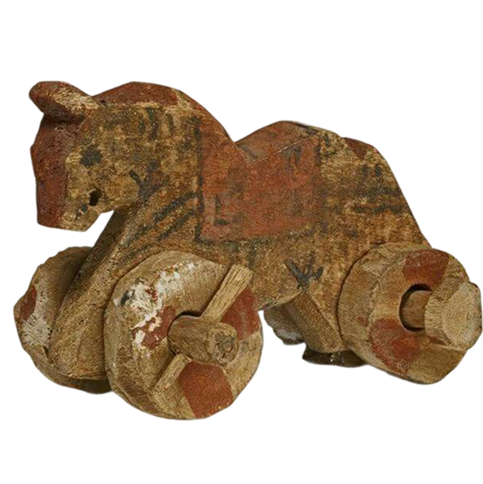
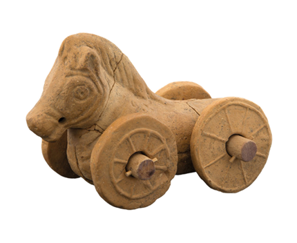
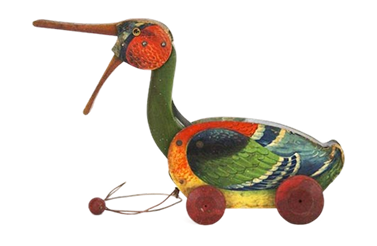

PERIODO ANTICO - DOVE TUTTO HA AVUTO INZIO
ANIMALI DA TRAINO
Se oggi abbiamo i camioncini o i trenini in plastica, i bambini dell'Antichità avevano piccoli compagni di gioco in argilla, legno o bronzo che li seguivano ovunque. Gli animali da traino (o "giocattoli su ruote") sono tra i reperti più teneri e comuni trovati nelle culle della civiltà, dalla Mesopotamia alla Magna Grecia.
UN GIOCO IN MOVIMENTO
L'innovazione era semplice ma rivoluzionaria: un animale modellato fissato su un carrello o dotato di fori nelle zampe per ospitare un asse di legno con delle ruote.
- Il Cavallino di Troia (in miniatura): il soggetto preferito era quasi sempre il cavallo, simbolo di forza e nobiltà, ma non mancano varianti curiose come arieti, maialini e persino topi.
- L'azione del gioco: un cordino veniva fatto passare attraverso un foro sul muso dell'animale. Il bambino, tirandolo, imparava a coordinare i movimenti e a camminare con più sicurezza, sentendosi "padrone" di una piccola creatura al suo seguito.



SIMBOLISMO
- L'educazione al futuro: Trascinare un cavallino o un carro in miniatura era un modo per imitare gli adulti che guidavano i carri veri o lavoravano nei campi.
- Materiali per ogni classe: Mentre i bambini delle famiglie comuni giocavano con rozzi animali in terracotta (spesso decorati con semplici strisce di vernice nera), i figli della nobiltà possedevano statuette in bronzo o legno pregiato finemente intagliato.

TESTIMONI SILENZIOSI
Molti di questi giocattoli sono giunti a noi in condizioni sorprendenti perché venivano deposti nelle tombe infantili come "compagni per l'eternità". Un famoso esemplare ritrovato in una tomba greca del IV secolo a.C. mostra un cavallino su quattro ruote che sembra ancora pronto a correre sul pavimento di un'antica casa di Atene.
